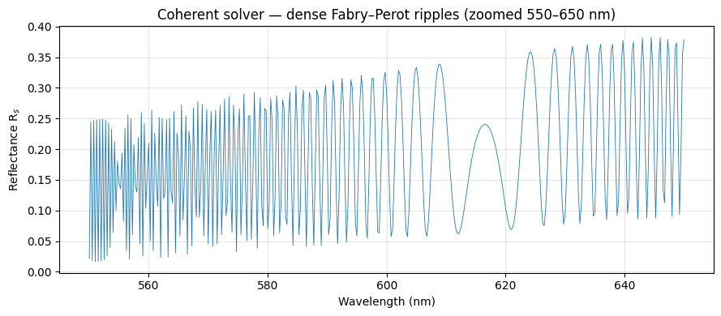
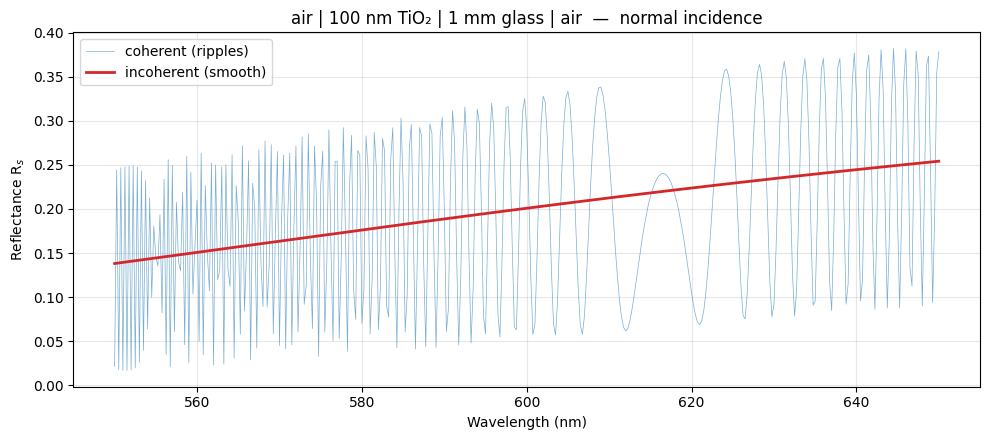
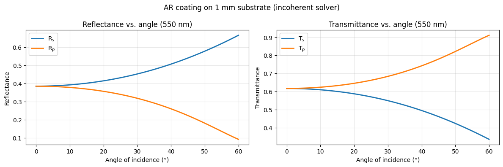
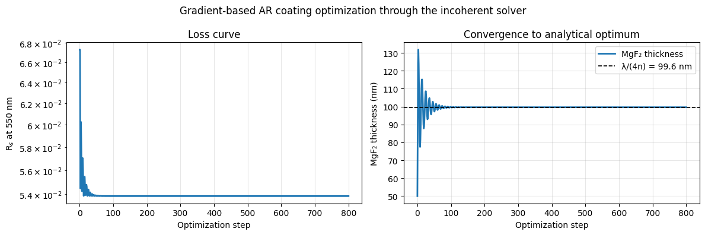

Incoherent Films
Model film stacks that include a thick substrate — like a 1 mm glass slide —
without the unphysical interference ripples a fully-coherent solver would produce.
The IncoherentIsotropicFilmSolver marks each interior
layer coherent ('c') or incoherent ('i') and returns real power coefficients.
Notebook: 4_incoherent_film.ipynb
The problem: Fabry–Perot ripples
Sweeping wavelength through a 100 nm TiO₂ film on a 1 mm glass slab with the coherent solver resolves the substrate's phase, producing dense ripples far finer than any spectrometer can measure:
import numpy as np
import torch
from difftmm import IsotropicFilmSolver, IncoherentIsotropicFilmSolver
device = torch.device("cuda" if torch.cuda.is_available() else "cpu")
n_film = 2.40 + 0.001j # TiO2 (small loss for numerical stability)
n_sub = 1.52 # glass
wvln_um = (np.linspace(550, 650, 401) / 1000).tolist()
theta = torch.tensor([0.0], device=device)
coh = IsotropicFilmSolver(
mat_in=1.0, mat_out=1.0,
mat_ls=[n_film, n_sub],
thickness_ls=[0.100, 1000.0], # 100 nm film | 1 mm substrate
thickness_max=2000.0, # allow the 1 mm substrate
device=device,
)
_, _, rs_coh, _ = coh.simulate(theta=theta, wvln=wvln_um)
R_coh = (rs_coh[0, :, 0].abs() ** 2) # dense ripples

The fix: mark the substrate incoherent
c_list gives the coherence of each interior layer, in physical order. Keep
the 100 nm TiO₂ coherent and mark the 1 mm glass incoherent. The two semi-infinite
media are always incoherent. The solver returns real (Rs, Rp, Ts, Tp):
inc = IncoherentIsotropicFilmSolver(
mat_in=1.0, mat_out=1.0,
mat_ls=[n_film, n_sub],
c_list=["c", "i"], # TiO2 coherent, glass incoherent
thickness_ls=[0.100, 1000.0],
thickness_max=2000.0,
device=device,
)
Rs, Rp, Ts, Tp = inc.simulate(theta=theta, wvln=wvln_um)
R_inc = Rs[0, :, 0] # smooth, measurable spectrum
The coherent curve oscillates wildly; the incoherent curve is smooth, and its value tracks the slow envelope of the coherent ripples.

Anti-reflection coating on a thick slide
A more practical stack: a two-layer TiO₂/SiO₂ AR coating (both coherent) on a 1 mm N-BK7 substrate (incoherent), swept over angle at 550 nm. Both polarizations come out smooth and measurable:

Differentiable through thick substrates
The incoherent solver is still fully differentiable, so you can inverse-design a
coating that sits on a thick substrate. Here a single-layer MgF₂ anti-reflection
coating is optimized to minimize Rₛ at 550 nm — and converges to the analytical
quarter-wave optimum d* = λ/(4·n_MgF₂) ≈ 99.6 nm:
opt = IncoherentIsotropicFilmSolver(
mat_in=1.0, mat_out=1.0,
mat_ls=[1.38, 1.515], # MgF2 | glass
c_list=["c", "i"],
thickness_ls=[0.050, 1000.0], # start MgF2 too thin (50 nm)
thickness_max=2000.0,
device=device,
)
opt.film_params = opt.film_params.detach().requires_grad_(True)
wvln = torch.tensor([0.550], device=device)
theta = torch.tensor([0.0], device=device)
optimizer = torch.optim.Adam([opt.film_params], lr=2e-5)
for step in range(800):
optimizer.zero_grad()
Rs, _, _, _ = opt.simulate(theta=theta, wvln=wvln)
loss = Rs[0, 0, 0] # minimize reflectance
loss.backward()
opt.film_params.grad[..., -1] = 0 # freeze the substrate (no physical effect)
optimizer.step()

See 4_incoherent_film.ipynb for the full walkthrough.